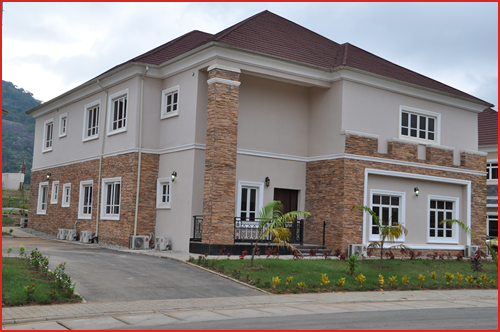

2014
click to expand/collapse
-
FCT Minister Commissions The Luxurious ASO Grove Estate, Abuja August 29, 2014
-
The Honorable Minister of the Federal Capital Territory, Senator Bala Abdulkadir Mohammed, CON, on August 29, 2014, commissioned the newly completed luxurious ASO Grove Estate financed by ASO Savings & Loans Plc.
Located at the Maitama extension of Abuja, the estate covers an expanse of 60 units of 5 bedroom detached duplexes with one room maid’s quarters, each exquisitely built on a 750 sqm plot of land. It has modern, world class recreational facilities, including a club house, 2 gymnasiums and 2 swimming pools (one each dedicated exclusively for the use of women), two tennis courts, a squash court and a basketball court, all nestled amid thick foliage at the foot of the range of hills that peak at ASO Rock.
The successful completion of this project is a major milestone in the annals of ASO and a testament to what can be achieved when there is a resolve to succeed.
Tape Cutting By the Special Guest of Honour, The Hon. Minister of The FCT, Senator Bala Mohammed CON . Supporting him are (L-R) Engr. John Chukwu, Perm Sec., Alhj. Aliyu Modibo, Former Minister of The FCT, Hon. Amina Khadi, Member House of Reps, Mr. Tunde Ayeni, Chairman ASO, Mr. Hassan Musa Usman, ASO MD.  One of the 5 Bedroom Duplexes at ASO Grove Estate. The official unveiling of the Plaque by the Hon. Minister, Senator Bala Mohammed CON, supported by (L-R), Hon Amina Khadi, Mr Tunde Ayeni and Mr Hassan Musa Usman. Special Guest of Honour, Senator Bala Mohammed, CON, inspecting one of the bedrooms at ASO Grove Estate. With him is the Chairman ASO.
-
-
ASO Pays Courtesy Visit To The Governor Of Plateau State August 12, 2014
-
L-R Eziokwu Nwafor-Orizu, Head Real Estate Project (ASO), Ignatius Datong Longjan, Deputy Governor Plateau State, Hadiza Kabir, Head Institutional Banking Public Sector (ASO), Mohammed Salisu, Group Head Institutional Banking Group (ASO), Jonah Jang, Governor Plateau State, Hassan Usman, MD ASO Savings & Loans Plc., Engr. Bulus Solomon Maren, Commissioner, Ministry of Housing & Urban Development, Hon. Helen Miner Commissioner, Ministry of Commerce & Industry
-
-
ASO Investigates, Apprehends Fraudulent Staff For Impersonation July 17, 2014
-
The Management of ASO Savings & Loans Plc. announced that, after a thorough investigation, the bank has successfully ensured the arrest of a fraudulent member of its Staff by the Naval Police, on the grounds of impersonation.
This incident occurred on Wednesday July 9, 2014 at the ASO Corporate Head Office located on Central Business District Abuja. The apprehended Staff, Mr. Simon Musa, claimed to be a brother to one Rear Admiral Musa in the Nigerian Navy, but suspicions were raised in the Bank after Mr. Simon Musa made a demand for kickback which the Management found strange. The Management then requested for a thorough investigation into Mr. Musa’s transactions and dealings with the Navy and subsequently reported its suspicions to the Office of the Chief of Naval Staff. The Bank, in collaboration with a Naval police team, then organized a sting operation and the Staff was apprehended.
Mr. Musa is currently in the Naval Police custody for questioning and further prosecution.
ASO Savings remains committed to protecting the interests of its customers by consistently ensuring only responsible and competent Staff are retained in its work force.
-
-
ASO Announces Plans For Nationwide Expansion February 25, 2014
-
The Managing Director of ASO Savings and Loans Plc, Mr. Hassan Musa Usman, today in Abuja, revealed the company´s plan to significantly build up its mortgage loan portfolio and to aggressively expand to all states of the federation. Usman explains that "with our successful recapitalisation in meeting the CBN’s N5 Billion minimum requirement for PMIs, ASO is reinvigorating its 3-year plan of expanding its business operations all over the country so that existing and prospective customers can have access to all the unique mortgage opportunities that ASO Savings offers. This development is part of our business vision planned for the company this year".
Usman further stated that "we will be revealing more information about the expansion plans in the coming weeks. However, with our solid capitalisation, asset base and capital projects across the country in partnership with both states and federal governments, we have grown so much in equity and capital base. All these, I am confident, will further validate our positioning statement and brand promise to be the Mortgage Bank of Choice, creating affordable homes for all Nigerians."
ASO Savings has a variety of products aimed at meeting the diverse needs of its ever-increasing clientele. There are five product groups, Individual Banking, Home Financing, Small Business Banking, Real Estate Investment Banking and E-Banking. Under each Banking Group, there are accounts that have very flexible features (Savings & Current), making it easy for customers to benefit maximally. Interests on these products are amongst the most attractive within the banking sub-sector of the country.
Since it started business in 1995, ASO has created over 12,000 mortgages of over N40 billion as well as financed the construction of several housing estates. The mortgage firm has been in bilateral agreement and strategic alliances with various state governments and even the Federal Ministry of Lands, Housing & Urban Development to provide massive housing schemes for Nigerians. Presently, ASO Savings has its footprints in various states across the country, partnering with State governments in Oyo, Cross Rivers, Abia, Lagos and the FCT among others to provide affordable homes to civil and public servants.
The organisation is being managed by a team of seasoned professional financial experts led by Hassan Musa-Usman. A Chartered Accountant, Musa-Usman possesses a highly relevant, award-winning career spanning over twenty three years in Finance and Investment Advisory and Privatization Services, covering various sectors and global regions. He brings a deep knowledge in creating various financing solutions to broaden ASO's offerings. For more details on ASO products, visit www.asoplc.com.
-